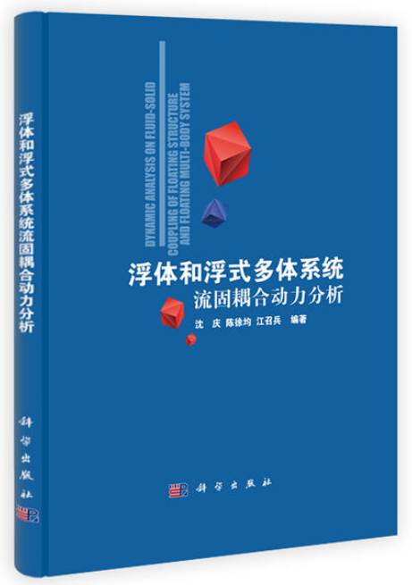

Books
Beyond journal papers and engineering practice, Zhaobing Jiang writes long-form books for general readers, translating the economics and technology shifts of our time into judgements and actions that ordinary people can actually use. The manuscript below is published in full and free to read or download.
Monographs
-
1. Survival Economics in Uncertain Times: A Guide to Observing and Acting in a Changing World
Zhaobing Jiang — third edition (expanded manuscript), 2026, 132 pages, about 131,000 Chinese characters, three parts and fifteen chapters, illustrated, with appendices A–C
Chinese title: 《不确定年代的生存经济学——写给普通人的变局观察与行动指南》 [PDF] [DOCX] -
2. The Most Beautiful Mathematical Figures in History: Where Science Meets Art
Zhaobing Jiang — 2026, 228 pages, about 100,000 Chinese characters, seven parts and fifty chapters, 148 illustrations
Chinese title: 《史上最美数学图形：科学与艺术的结合》 [PDF] [DOCX] -

3. Dynamic Analysis of Fluid–Structure Interaction in Floating Bodies and Floating Multi-Body Systems
Qing Shen, Xujun Chen, Zhaobing Jiang — manuscript, 2019, two parts: Chapters 1–7 (185 pages) and Chapters 8–10 (73 pages)
Chinese title: 《浮体和浮式多体系统流固耦合动力分析》 Part 1, Chapters 1–7: [PDF] [DOCX]
Part 2, Chapters 8–10: [PDF] [DOCX] -
4. Stability Calculation and Experiment of a Floating-Base Multi-Body System During Water Deployment
Naijuan Du, Zhaobing Jiang — manuscript for National Defense Industry Press, 2020, 156 pages, eight chapters
Chinese title: 《浮基多体系统水上展开的稳定性计算与试验》 [PDF] [DOCX]
About the Books
1. Survival Economics in Uncertain Times (2026)
This book is written for ordinary people who feel the ground shifting under their feet. In the past few years we have witnessed events that read like textbook cases: global inflation returning, a bank collapsing within 48 hours, house prices ending their one-way rise, AI rewriting the prospects of countless occupations within months, and delayed retirement moving from rumour to timetable. Behind every headline are concrete questions for ordinary households: where should savings go when deposit rates keep falling? Should a shrinking home be paid off early? What if a child graduates into a market where three people compete for one post? Will a 35-year-old appear on the next layoff list?
The answers available today tend to sit at two extremes: academic narratives that are rigorous but far from a household ledger, and traffic-driven anxiety that is intense but offers no defensible remedy. This book stands on the ground between them: it uses Nobel-level economic theory to make sense of the shift that is under way, then translates that theory into actions an ordinary person can realistically take.
The book has three parts, each with five chapters of five sections. Part I, "Shifting Ground", answers what is happening: inflation and money, the mountain of debt, the retreat of globalization, the AI revolution, and ageing with low growth — five main lines that form the coordinate system of our time. Part II, "Lenses", answers why: cycles, human nature, information, institutions, and risk — five pairs of theory glasses tested by Nobel Prizes, which reveal the mechanism behind the phenomenon. Part III, "Playbook", answers what to do: a household balance-sheet checkup, career and human-capital strategy, investment discipline, survival rules for small business owners, and stress testing — five sets of tools that can be put to work directly. Every section follows the same logic: story, mechanism, domestic relevance, theory, action.
Three things the book does not do: it makes no point-in-time forecasts, it uses no mathematical formulas (all theory is explained through stories, analogies and charts), and it promises no shortcut to sudden wealth. Its tone is stability before return, survival before prosperity, discipline before cleverness. The domestic livelihood data it cites — graduate numbers, unemployment, foreclosed homes, deposit rates, the delayed-retirement timetable — come from public reports and official statistics as of mid-2026. Data ages; the mechanisms behind it do not.
2. The Most Beautiful Mathematical Figures in History (2026)
This book is an illustrated tour of fifty classical mathematical figures, from the Fibonacci spiral, the golden rectangle and the cardioid to the Mandelbrot set, the Lorenz attractor, the Möbius strip, the Klein bottle, Penrose tilings and the Ulam spiral. It opens with a prologue on why mathematics is beautiful and proceeds through seven parts — golden ratios and spirals, the beauty of curves, the world of fractals, the beauty of chaos, the beauty of space, symmetry and tessellation, and patterns born from arithmetic — closing with an epilogue that treats mathematics and art as two languages of one beauty.
Each chapter starts from a phenomenon in nature, art or everyday life, explains the mathematics behind it, and plots the figure at high resolution: rabbit breeding and galaxy arms, nautilus shells and sunflower seeds at 137.5 degrees, the three-body problem, Turing patterns, the seventeen wallpaper groups, prime spirals and the digits of π. Appendices gather further reading, image credits and an index of the plotting code for every chapter, so that readers can reproduce each figure themselves.
3. Dynamic Analysis of Fluid–Structure Interaction in Floating Bodies and Floating Multi-Body Systems (2019 manuscript)
Written jointly by Qing Shen, Xujun Chen and Zhaobing Jiang: Shen wrote Chapters 1, 2, 3, 4, 7 and 8, Chen wrote Chapter 5, and Jiang wrote Chapters 6, 9 and 10, with Shen preparing the final manuscript. Starting from simplified and linearized models of different floating bodies and floating multi-body systems, the text develops the corresponding theoretical frameworks and solution schemes, and gives a systematic treatment of the underlying theory, numerical techniques and dynamic response characteristics — rigid-body dynamics, velocity-potential problems in fluid–structure interaction, hydrodynamic coefficients, and time-domain analysis of floating and floating-base multi-body systems. It is intended as a reference for graduate students and engineers working in naval architecture and ocean engineering, port, coastal and offshore engineering, combat engineering support and engineering mechanics.
The manuscript is published here in two parts, Chapters 1–7 (185 pages, including preface and contents) and Chapters 8–10 (73 pages), each available as PDF and Word. In the Word files the illustrations were re-compressed to display resolution; the text, equations and layout are unchanged.
4. Stability Calculation and Experiment of a Floating-Base Multi-Body System During Water Deployment (2020 manuscript for National Defense Industry Press)
Co-authored by Naijuan Du and Zhaobing Jiang, the book applies the homogeneous matrix method to model typical floating-base multi-body systems deployed on water and to analyse their dynamics: the homogeneous matrix formulation of multi-body dynamics, dynamic analysis of floating-base multi-body systems, modelling of the floating body system of a пмм-2 self-propelled pontoon bridge, dynamic analysis and numerical computation of its launching and deployment on water, the dynamic response of deployment in waves, and validation through a floating-base pendulum-rod test. The manuscript runs to eight chapters over 156 pages, with a preface and table of contents.